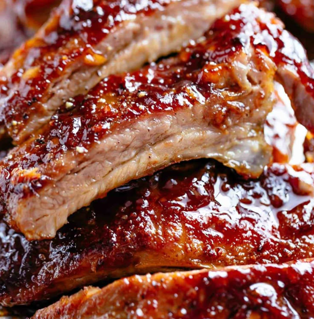

Costelinha de Porco Assada
Ingredientes
- 1 kg de costelinha de porco
- 4 dentes de alho picados
- 1 cebola média picada
- 1/2 xícara de molho de soja (shoyu)
- 1/4 xícara de mel
- 2 colheres de sopa de vinagre
- 2 colheres de sopa de óleo
- 1 colher de sopa de mostarda
- 1 colher de chá de páprica defumada
- Sal e pimenta-do-reino a gosto
- Salsinha picada para decorar (opcional)
Modo de Preparo
- Em uma tigela, misture o alho, a cebola, o molho de soja, o mel, o vinagre, o óleo, a mostarda,
a páprica defumada, o sal e a pimenta-do-reino.
- Coloque as costelinhas em um recipiente ou saco plástico e despeje a marinada por cima.
Certifique-se de que todas as peças estejam bem envolvidas.
- Leve à geladeira e deixe marinar por pelo menos 2 horas (ou de um dia para o outro, para um
sabor mais intenso).
- Pré-aqueça o forno a 180°C.
- Retire as costelinhas da marinada e coloque-as em uma assadeira. Reserve a marinada.
- Asse as costelinhas por aproximadamente 1 hora, virando-as na metade do tempo e regando com a
marinada reservada para que fiquem suculentas.
- Aumente a temperatura do forno para 200°C e asse por mais 15-20 minutos, ou até que as
costelinhas fiquem douradas e caramelizadas.
- Retire do forno, decore com salsinha picada (se desejar) e sirva quente.